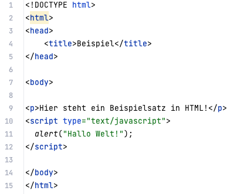

PORTFOLIO
How to: HTML
-
Zu Beginn der Vorlesung haben wir uns mit den Grundlagen von HTML beschäftigt. Grundlegende Tags, wie html, head, body, p(paragraph), h1(und h2,...) und script.
Tags müssen geöffnet und geschlossen werden. Mit html wird z.B. geöffnet und /html geschlossen.
Eine HTML Seite, die mit Script Tags JavaScript nutzt, könnte so aussehen:

In manchen Tags, wie script oder img für image stehen wichtige Bestandteile im Öffnungstag dabei.
Der Stil in HTML kann durch den style Tag bestimmt werden. Hier können z.B. Farbe, Schriftgröße und Schriftart festgelegt werden.
Der Inhalt oder das Layout auf HTML Seiten kann auch verändert werden. Wie durch das Klicken eines Buttons:

Hypertext und Links
In HTML kann man zu verschiedenen Dateien verlinken und diese durch Links aufrufen. Links werden mit dem a Element erstellt und das href Element gibt die Zielseite an.Dokumente (html) können in Ordner gegliedert und dadurch organisiert werden. Um auf sie zu verlinken, muss man dann nur im Link den Ordner hinzufügen oder durch ../ aus dem jetzigen Ordner herausgehen ("eins hoch").
Wie z.B. für die Links der Navigationsleiste dieser Website.